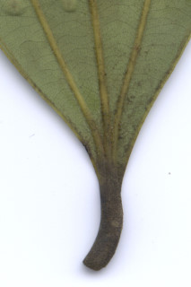
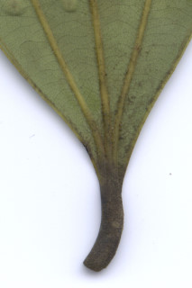

Trees up to 15 m tall.
15 ಮೀ.ವರೆವಿಗೆ ಬೆಳೆಯುವ ಮರಗಳು.
15 മീറ്റര് വരെ ഉയരമുളള മരങ്ങള്.
மரங்கள் 15 மீ. உயரம் வரை வளரக்கூடியது
Bark smooth, brown, pustular with aromatic smell; blaze pale brown.
ತೊಗಟೆ ನಯವಾಗಿದ್ದು ಕಂದು ಬಣ್ಣ ಹೊಂದಿರುತ್ತದೆ ಮತ್ತು ಬೊಕ್ಕೆಗಳ ಸಮೇತವಿದ್ದು ಸುವಾಸನಾಯುಕ್ತವಾಗಿರುತ್ತದೆ; ಕಚ್ಚು ಮಾಡಿದ ಜಾಗ ತೆಳು ಕಂದು ಬಣ್ಣದಲ್ಲಿರುತ್ತದೆ.
ചെറുകുരുക്കള് നിറഞ്ഞ, തവിട്ട് നിറത്തിലുളള, മിനുസമായ പുറംതൊലി; ഹൃദ്യസുഗന്ധമുള്ളതാണ്. വെട്ട്പാടിന് ഇളം തവിട്ട് നിറമാണ്.
மரத்தின் பட்டை வழுவழுப்பானது, ப்ரவுன் நிறமானது, நீர் கோர்த்தது போன்ற எழும்பிய அமைப்புடையது (புஸ்டுலார்), நறுமணமிக்கது; உள்பட்டை வெளிறிய ப்ரவுன் நிறமானது.
Branchlets subterete, glabrous.
ಕಿರುಕೊಂಬೆಗಳು ಉಪದುಂಡಾಗಿದ್ದು ರೋಮರಹಿತವಾಗಿರುತ್ತವೆ.
അരോമിലമായ, ഏതാണ്ട് ഉരുണ്ട, ഉപശാഖകള്.
சிறிய நுனிக்கிளைகள் குறுக்குவெட்டுத் தோற்றத்தில் வளையம் போன்றது, உரோமங்களற்றது.
Leaves simple, opposite to subopposite; petiole ca. 2 cm long, planoconvex in cross section, glabrous; lamina 9.5-30 x 3.5-7.5 cm, oblong or elliptic-oblong to oblong-lanceolate, apex acute to acuminate, base acute to attenuate, glabrous, shining above, aromatic, coriaceous; basally trinerved, laterals reaching nearly to leaf apex, midrib raised above; tertiary_nerves horizontally_percurrent; higher order nerves minutely reticulate.
ಎಲೆಗಳು ಸರಳವಾಗಿದ್ದು,ಅಭಿಮುಖದಿಂದ ಉಪಅಭಿಮುಖವರೆಗಿನ ಮಾದರಿಯಲ್ಲಿ ಜೋಡನೆಗೊಂಡಿರುತ್ತವೆ;ತೊಟ್ಟುಗಳು ಅಂದಾಜು 2 ಸೆಂ.ಮೀ. ವರೆಗಿನ ಉದ್ದವಿದ್ದು, ಅಡ್ಡ ಸೀಳಿದಾಗ ಸಪಾಟಪೀನ ಮಧ್ಯ ಆಕಾರದಲ್ಲಿರುತ್ತವೆ ಮತ್ತು ರೋಮರಹಿತ -ವಾಗಿರುತ್ತವೆ; ಪತ್ರಗಳು 9.5-30 x 3.5-7.5 ಸೆಂ.ಮೀ.ಗಾತ್ರ ಹೊಂದಿದ್ದು ಚತುರಸ್ರ ಅಥವಾ ಅಂಡವೃತ್ತ –ಚತುರಸ್ರದಿಂದ ಚತರಸ್ರ-ಭರ್ಜಿಯ ಆಕಾರದಲ್ಲಿರುತ್ತವೆ. ಪತ್ರದ ತುದಿ ಚೂಪಾದುದರಿಂದ ಕ್ರಮೇಣ ಚೂಪಾಗುವ ಮಾದರಿಯಲ್ಲಿರುತ್ತದೆ;ಬುಡ ಚೂಪಾದುದರಿಂದ ಒಳಬಾಗಿದ ರೀತಿಯಲ್ಲಿರುತ್ತದೆ;ಪತ್ರಗಳ ಮೇಲ್ಮೈ ತೊಗಲನ್ನೋಲುವ ಮಾದರಿಯಲ್ಲಿದ್ದು ರೋಮರಹಿತವಾಗಿರುತ್ತದೆ;ಪತ್ರಗಳ ಮೇಲ್ಭಾಗ ಹೊಳಪಿನ ಸಮೇತವಿರುತ್ತದೆ; ಪತ್ರಗಳು ಸುವಾಸನಾಯುಕ್ತವಾಗಿರುತ್ತವೆ; ಪತ್ರಗಳು 3 ಅಗ್ರ-ಆಧಾರ ನಾಳಗಳನ್ನು ಹೊಂದಿದ್ದು ಪಾರ್ಶ್ವ ನಾಳಗಳು ಬಹುಮಟ್ಟಿಗೆ ಎಲೆಯ ಅಗ್ರವನ್ನು ತಲುಪುವುವಂತಿರುತ್ತವೆ;ಮಧ್ಯ ನಾಳ ಮೇಲೆದ್ದಿರುತ್ತದೆ;ಮೂರನೇ ದರ್ಜೆಯ ನಾಳಗಳು ಲಂಬ ರೇಖೆಗೆ ಸಮಕೋನದಲ್ಲಿರುತ್ತವೆ ಹಾಗೂ ಎಲೆದಿಂಡಿಗೆ ಅಡ್ಡವಾಗಿ ಕೂಡುವ ರೀತಿಯವು. ಉನ್ನತ ದರ್ಜೆಯ ನಾಳಗಳು ಸೂಕ್ಷ್ಮ-ಜಾಲಬಂಧ ನಾಳ ವಿನ್ಯಾಸದಲ್ಲಿರುತ್ತವೆ.
ലഘൂവായ ഇലകള്, സമ്മുഖം തൊട്ട് ഉപസമ്മുഖം വരെയാകാം; ഛേദത്തില് ഒരു ഭാഗം പരന്നും മറുഭാഗം ഉരുണ്ടുമുളള ഘടനയുളള, അരോമിലമായ ഇലഞെട്ടിന് ഏതാണ്ട് 2 സെ.മീ നീളം; പത്രഫലകത്തിന് 9.5 സെ.മീ മുതല് 30 സെ.മീ വരെ നീളവും, 3.5 സെ.മീ തൊട്ട് 7.5 സെ.മീ വരെ വീതിയും ആകൃതി, ആയതാകാരമോ ദീര്ഘവൃത്തീയ-ആയതാകാരം തൊട്ട് ആയതാകാര-കുന്താകാരം വരെയാകാം. പത്രാഗ്രം നിശിതം തൊട്ട് ദീര്ഘാഗ്രം വരെയാകാം, പത്രാധാരം നിശിതം തൊട്ട് നേര്ത്തവസാനിക്കുന്നതുവരെയാകാം, അരോമിലം, മുകളില് തിളങ്ങുന്നതാണ്, ഹൃദ്യസൂഗന്ധമുളളതാണ്, ചര്മ്മില പ്രകൃതം; ആധാരത്തില് 3 ഞരമ്പുകളുളളതാണ്, അഗ്രത്തിനോടടുത്തെത്തുന്ന പാര്ശ്വസിരകള്, മുഖ്യസിര മുകളില് ഉയര്ന്നതാണ്; തിരശ്ചീന പെര്കറന്റ് വിധത്തിലുളള ത്രിതീയ ഞരമ്പുകള്; മറ്റ് ഞരമ്പുകള് സൂക്ഷ്മമായി ജാലിതമാണ്.
இலைகள் தனித்தவை, எதிரடுக்கம் முதல் கிட்டதட்ட எதிரடுக்கம் போன்றது; இலைக்காம்பு 2 செ.மீ. நீளமானது, குறுக்குவெட்டுத் தோற்றத்தில் பிளேனோகான்வக்ஸ், உரோமங்களற்றது; இலை அலகு 9.5-30 X 3.5-7.5 செ.மீ., நீள்சதுரம் அல்லது நீள்வட்டம்-நீள்சதுரம் முதல் நீள்சதுரம்-ஈட்டி வடிவானது, அலகின் நுனி கூரியது முதல் அதிக்கூரியது, அலகின் தளம் கூரியது முதல் அட்டனுவேட், அலகின் கீழ்பரப்பு உரோமங்களற்றது, மேற்பரப்பு பளபளப்பானது, நறுமணமுடையது, பக்கநரம்புகள் இரண்டும் அலகின் நுனி வரை செல்பவை; மூன்றாம் நிலை நரம்புகள் விளிம்பை நோக்கிய கிடைமட்டத்தில் இணையான பெர்க்கரண்ட்; மற்ற சிறு நரம்புகள் நெருக்கமான வலைப்பின்னல் போன்றது.
Inflorescence pseudoterminal and axillary lax panicles, many flowered, pubescent.
ಪುಷ್ಪಮಂಜರಿ ಹುಸಿ-ತುದಿಯಲ್ಲಿ ಮತ್ತು ಅಕ್ಷಾಕಂಕುಳಿನಲ್ಲಿದ್ದು ಹೆಚ್ಚಿನ ಸಂಖ್ಯೆಯ ಹೂಗಳನ್ನೊಳಗೊಂಡಿದ್ದು ಪುನರಾವೃತ್ತಿಯಾಗಿ ಕವಲೊಡೆಯುವ ಮಾದರಿಯಲ್ಲಿದ್ದು ಮತ್ತು ಸಡಿಲ ರೀತಿಯಲ್ಲಿರುತ್ತವೆ ಹಾಗೂ ಮೃದುಪ್ಪಳದಿಂದ ಕೂಡಿರುತ್ತವೆ.
നനുത്ത രോമിലമായ, ധാരാളം പൂക്കളുളള പൂങ്കുല, കപടഉച്ഛസ്ഥമോ കക്ഷീയമോ ആയ അയഞ്ഞ പാനിക്കിളുകളാണ്.
மஞ்சரி கிட்டதட்ட தண்டின் நுனியில் காணப்படுபவை மற்றும் இலைக்கோணங்களில் நெருக்கமில்லாத மலர்களுடைய பேனிக்கிள், அதிக எண்ணிக்கையில் மலர்களுடையது, உரோமங்களுடையது.
Berry, ellipsoid; fruiting_perianth_cup 0.7 cm long with persistent lobes; seed 1.
ಬೆರ್ರಿಗಳು ಅಂಡವೃತ್ತಾಕಾರ ಹೊಂದಿರುತ್ತವೆ; ಕಾಯಿಗಳ ಪುಷ್ಪಪಾತ್ರೆಯ ಬಟ್ಟಲು ಅಂದಾಜು 0.7 ಸೆಂ.ಮೀ. ಉದ್ದವಿದ್ದು ಶಾಶ್ವತವಾದ ದಳಗಳ ಸಮೇತವಿರುತ್ತವೆ;ಬೀಜ 1.
ഒറ്റവിത്തുളള കായ, ഉറച്ചുനില്ക്കുന്ന കര്ണ്ണങ്ങളുളള, 0.7 സെ.മീ നീളമുളള ഫലബാഹ്യദളത്തോടു കൂടിയ ദീര്ഘഗോളാകാര ബെറിയാണ്.
முழுச்சதைகனி (பெர்ரி), நீள்வட்ட வடிவானது, ப்பீரியான்ந்த் கோப்பை 0.7 செ.மீ. நீளமானது அதன் இதழ்கள் தெளிவானது; விதை ஒன்றுடையது.

 
